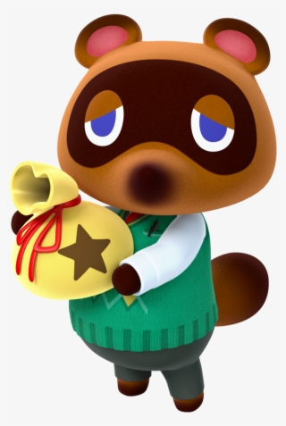

Les clochettes sont la monnaie principale dans ACNH. Elles permettent:

En bref, les clochettes sont essentielles pour avancer dans le jeu et c'est pour cela qu'il faut faire le plein !
On vous propose donc un tour d’horizon des meilleures façons de gagner de l’argent dans ce jeu.
Une fois par jour, un trou brillant viendra éveiller votre curiosité sur votre île.
Creusez-y pour y récupérer 1000 clochettes. Plantez-y 10 000 clochettes et attendez quelques jours.
Un arbre à clochettes y poussera ensuite et vous permettra de récupérer pas moins de 30 000 clochettes, avec un investissement de départ
de 10 000 clochettes.
Une méthode un peu longue, mais qui a au moins le mérite d'embellir votre ville d'arbres à clochettes.
Celui qui vous a dit que l'argent ne poussait pas sur les arbres n'a jamais joué à Animal Crossing.
Une fois par jour, un rocher de votre île sera remplie de clochettes au lieu de matières premières quand vous le frappez. Creusez deux trous derrière votre personnage afin qu'il ne recule pas trop et tapez le rocher avec votre pelle : des sacs de clochettes en sortiront ! En réussissant à sortir les 8 sacs, vous pourrez vous faire un peu plus de 16 000 clochettes par jour.
Pour 2 000 miles, vous pouvez acheter un Ticket Nook Miles et vous rendre sur une île mystère (via l'aéroport). Il existe une île assez rare avec 5 rochers à clochettes en son centre !
Une fois par semaine, Pollux mais aussi Djason viennent visiter votre île. Pollux rachète les poissons 50% plus cher que Méli & Mélo
si vous réussissez son défi. Pareil pour Djason avec les insectes mais sans le défi. On vous recommande donc de conserver vos espèces les plus
rares pour leurs visites, comme les tarentules dont le prix de vente passe de 8 000 à 12 000 clochettes.
En cas de doute, vous pouvez consulter les listes de prix des poissons et d’insectes
en cliquant sur ces liens.

Parmi les composantes iconiques de la série Animal Crossing, il y a les navets. Simple légume pour certains, il s’agit pourtant d’un élément qui peut vous rapporter gros. Si, pour les anciens joueurs de la série, le concept est déjà connu et sans doute bien ancré, il peut quelque peu déboussoler les nouveaux joueurs qui découvrent la série avec Animal Crossing : New Horizons.
Tous les dimanche matin, vous pouvez acheter des navets auprès de Porcelette entre 80 et 120 clochettes. Tous les autres jours de la semaine (du lundi au samedi), il sera possible de les revendre à deux occasions (le matin et l’après-midi) à la Boutique Nook. Le cours du navet sera donc totalement différent.
Imaginons : si vous achetez 10 navets à 100 clochettes et que le cours du navet le lendemain est à 120 clochettes, vous les revendrez donc plus cher. Prix d’achat : 10 x 100 = 1000 clochettes. Prix de revente 10 x 120 = 1200 clochettes. Vous avez donc fait un bénéfice de 200 clochettes ! Vous avez compris le principe, vous faites de la spéculation.
N'hésitez pas à faire le plein pour les revendre dans la semaine : demandez à Méli et Mélo "Le cours du Navet" et
attendez que celui-ci soit assez élevé pour vendre.
Attention : les navets pourrisent après 1 semaines et n'ont plus de valeur !
Certains sites et applications dédiés à ACNH vous permettent de faire des estimations sur votre cours personnel !